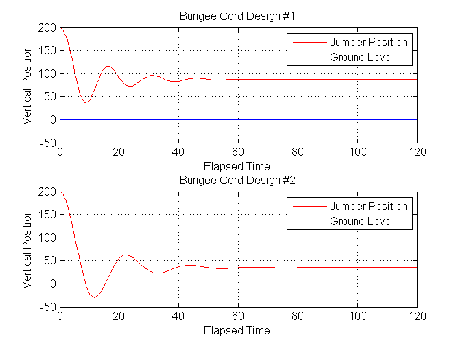

Lab 7 Prelab - Krishnateja Pemmaraju, Section 062, 8/6/2011
Contents
Problem Statement
In this lab, the concept was to model two bungee cord designs. Using two variables, we wanted to see if the differential equations could produce reliable results, in terms of safety requirements.
Function - pl71
type pl71
function d2y = pl71(t,Y)
g = 9.8; m = 75; ka = 12;
y0 = 200; l = 60; kv = 0; ke = 14;
y = Y(1,1);
yprime = Y(2,1);
x1 = y;
x2 = yprime;
if (y > (y0 - l));
x1dot = x2;
x2dot = -g-ka/m*x2;
else (y <= (y0 - l));
x1dot = x2;
x2dot = (-g+ke/m*y0 -ke/m*l)-(ka/m+kv/m)*x2-ke/m*x1;
end
d2y(1,1) = x1dot;
d2y(2,1) = x2dot;
Function - pl72
type pl72
function d2y = pl72(t,Y)
g = 9.8; m = 75; ka = 12;
y0 = 200; l = 60; kv = 0; ke = 7;
y = Y(1,1);
yprime = Y(2,1);
x1 = y;
x2 = yprime;
if (y > (y0 - l));
x1dot = x2;
x2dot = -g-ka/m*x2;
else (y <= (y0 - l));
x1dot = x2;
x2dot = (-g+ke/m*y0 -ke/m*l)-(ka/m+kv/m)*x2-ke/m*x1;
end
d2y(1,1) = x1dot;
d2y(2,1) = x2dot;
Solution Code
t = [0 120]; y0 = 200; y0prime = 0; Yinit = [y0;y0prime]; [t1 Y1] = ode45(@pl71,t,Yinit); [t2 Y2] = ode45(@pl72,t,Yinit); subplot(2,1,1),plot(t1,Y1(:,1),'r') line([0; 120],[0; 0]); axis([0 120 -50 200]) grid on; title('Bungee Cord Design #1'); xlabel('Elapsed Time'),ylabel('Vertical Position'); legend('Jumper Position','Ground Level') subplot(2,1,2),plot(t2,Y2(:,1),'r') line([0; 120],[0; 0]); axis([0 120 -50 200]) grid on; title('Bungee Cord Design #2'); xlabel('Elapsed Time'),ylabel('Vertical Position'); legend('Jumper Position','Ground Level')
Conclusion
After analyzing the plots, the first design is the safest. To make design 2 also safe, some important properties of the design would have to be changed.